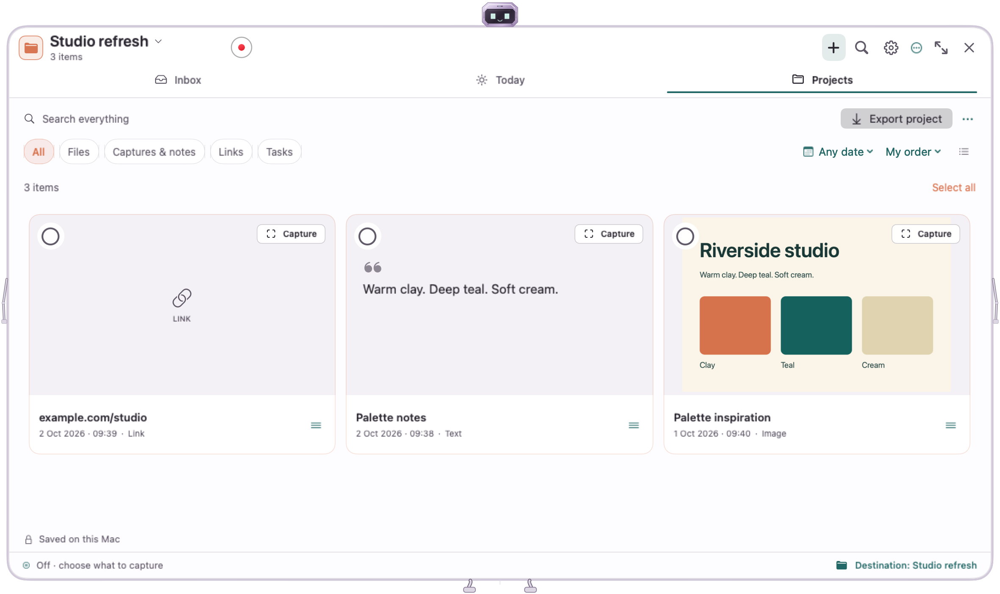

Catch an idea
Paste text, drop a file, save a link, or make a note. Organize it when you are ready.
DaBin keeps the useful bits of your day together: notes, links, images, files and tasks. Drop something worth keeping onto the little robot, and find it when you need it.
Apple Silicon Mac · macOS 14 or later

Editorial animation using actual DaBin views and fictional example content.
Paste text, drop a file, save a link, or make a note. Organize it when you are ready.
Collect references, notes and tasks in one project. Preview your saved material and export it when you choose.
Local text recognition makes supported saved screenshots, images and documents searchable—even when the word is missing from the title.

Search covers content saved into DaBin. It does not search every file on your Mac.
No account, ads, in-app analytics or cloud sync. Captures, notes and recognized text are stored locally.
Auto Capture is optional and starts off. You can choose later clipboard changes, new screenshots in a folder you select, or both—and pause at any time.
Website previews are optional and off by default. Enabling previews can contact manually saved websites. Automatically captured links never fetch previews.
Read the privacy policy ↗Yes. DaBin is free to download and use. No account is required.
No. Optional screenshot capture monitors new images in a folder you explicitly select. Optional clipboard capture saves later clipboard changes. Both start off.
No. Text recognition and saved-content search run on your Mac. DaBin's search is text search, rather than semantic search.
You control exports and local archive backups. DaBin does not provide cloud sync.
Free · Apple Silicon · macOS 14 or later